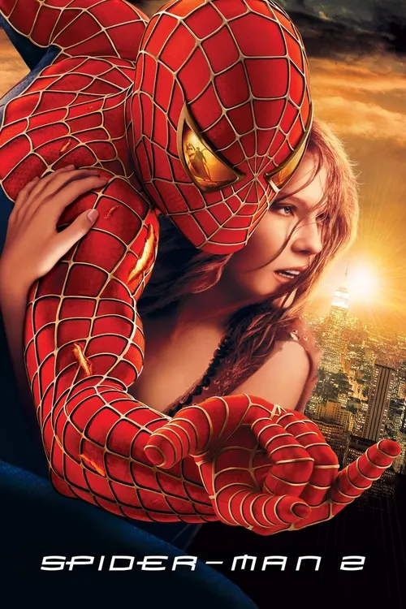
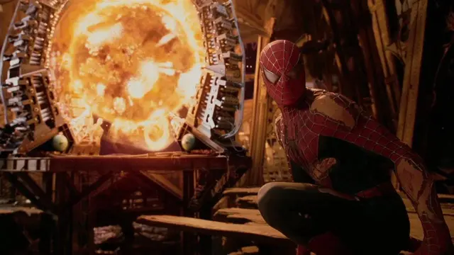
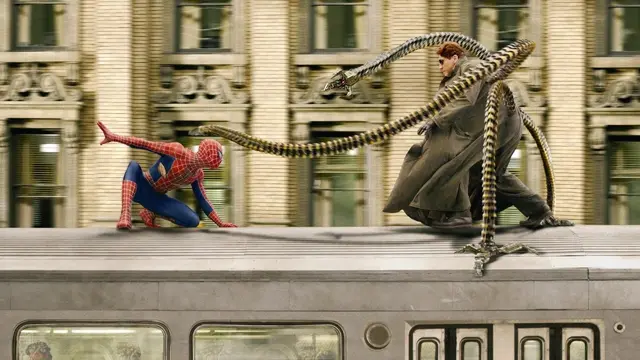
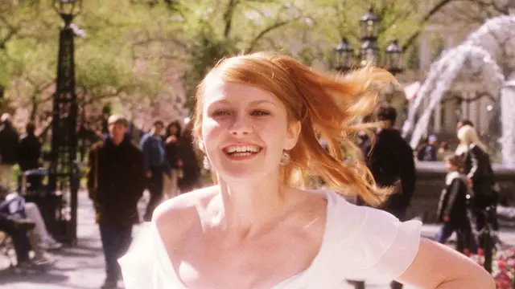

Spider-Man 2 (2004)
Peter Parker descubre que ser un héroe tiene un precio, y que a veces el enemigo más difícil es la propia duda. Para muchos fans, la mejor película de la saga.

Ficha técnica
- Dirección
- Sam Raimi
- Guion
- Alvin Sargent
- Historia
- Alfred Gough, Miles Millar y Michael Chabon
- Basada en
- Los cómics de Stan Lee y Steve Ditko
- Producción
- Laura Ziskin y Avi Arad
- Música
- Danny Elfman
- Fotografía
- Bill Pope
- Montaje
- Bob Murawski
- Estudio
- Columbia Pictures y Marvel Enterprises
- Estreno en EE. UU.
- Duración
- 127 minutos
- Presupuesto
- Unos 200 millones de dólares
- Recaudación
- Unos 789 millones de dólares en todo el mundo
Trama
Dos años después de convertirse en Spider-Man, Peter no puede con todo: lo echan de su trabajo de repartidor de pizzas, se atrasa en la universidad, no le alcanza el dinero para el alquiler y ve cómo Mary Jane se compromete con otro. Agotado, empieza a perder sus poderes.
Mientras tanto, el científico Otto Octavius, a quien Peter admira, presenta un experimento de fusión nuclear que sale terriblemente mal. El accidente mata a su esposa y fusiona a su cuerpo los brazos mecánicos que usaba para controlar el reactor. Con su inteligencia artificial dañada, los brazos lo empujan a obsesionarse con terminar el experimento a cualquier costo: nace el Doctor Octopus.
Peter decide abandonar su identidad secreta y llevar una vida normal. Pero cuando la ciudad vuelve a estar en peligro y Mary Jane es secuestrada, tiene que elegir otra vez entre su felicidad y su responsabilidad.
Elenco principal
| Actor o actriz | Personaje |
|---|---|
| Tobey Maguire | Peter Parker / Spider-Man |
| Kirsten Dunst | Mary Jane Watson |
| James Franco | Harry Osborn |
| Alfred Molina | Otto Octavius / Doctor Octopus |
| Rosemary Harris | May Parker |
| J. K. Simmons | J. Jonah Jameson |
| Donna Murphy | Rosalie Octavius |
Análisis
Spider-Man 2 toma la idea central del personaje, que ser un héroe implica sacrificios, y la convierte en el corazón de la película. Peter no pelea solo contra un villano: pelea contra el cansancio, la culpa y las ganas de vivir como cualquier otro.
El Doctor Octopus de Alfred Molina es uno de los mejores villanos del género porque no es malo: es un hombre brillante que perdió todo y al que sus propias máquinas controlan. Su redención final cierra un arco que se siente ganado.
La escena del tren es el gran momento de la saga. Spider-Man detiene el vagón con su cuerpo, queda inconsciente y sin máscara, y los pasajeros lo rescatan, le prometen guardar su secreto y se paran frente al Doctor Octopus para protegerlo. Es la película diciendo, sin palabras, que el héroe también necesita que lo cuiden.
Recepción y premios
- Ganó el Óscar a los mejores efectos visuales y estuvo nominada a mejor mezcla de sonido y mejor edición de sonido.
- Fue la película mejor recibida por la crítica de las tres: tiene un 93 % de aprobación en Rotten Tomatoes.
- Suele aparecer en los rankings de las mejores películas de superhéroes de la historia.
Galería de escenas
-

El reactor de fusión, el sueño que se convierte en amenaza. -

La pelea sobre el tren, el gran momento de la saga. -

Mary Jane toma su propia decisión.